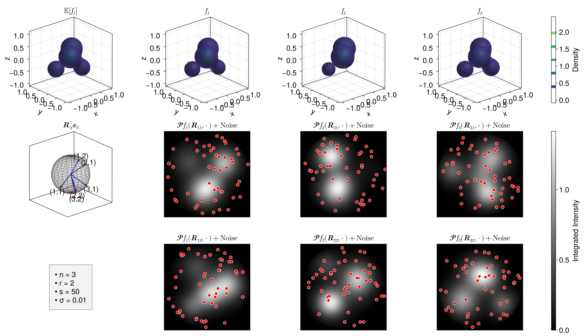

Variability Visualization
This tutorial demonstrates how to generate random 3D phantoms and simulate the 3D X-ray transform with measurement noise, which serves as the foundation for our covariance estimation framework.
Data Generation
Setup Global Parameters
n = 3 # Number of sample paths (functions)
r = 2 # Number of viewing angles (quaternions)
s = 50 # Number of evaluation points per viewing angle
m = 100 # Resolution for dense evaluation and plotting
L = 4 # Number of Gaussian components in the phantom
λ = 0.2 # Covariance scaling level for weights
σ = 0.01 # Measurement noise levelRandom 3D Phantom and X-ray Transform
Instead of a single function, we draw n different sets of weights from a Multivariate Normal distribution to represent biological or conformational heterogeneity.
using HeteroTomo3D, LinearAlgebra, Distributions, Random
centers = [
(0.3, 0.3, 0.3),
(-0.3, -0.3, 0.3),
(-0.4, 0.4, -0.4),
(0.3, -0.3, -0.3)
]
gammas = [5.0, 4.0, 6.0, 4.0] .* 2
# Draw random weights
mean_vec = [1.0, 0.8, 0.6, 0.4] .* 2
cov_matrix = λ * I(L) # Isotropic covariance for simplicity
Random.seed!(42)
weights = rand(MvNormal(mean_vec, cov_matrix), n) # Size: (L, n)
phantom = KernelPhantom3D(weights, centers, gammas)
# Generate the forward setup
X = rand_evaluation_grid(s, r, n, m; seed=123) # Evaluation grid for the forward operator
Q = rand_quaternion_grid(r, n; seed=123) # Random quaternion grid for the forward operator
projections = xray_transform(phantom, X, Q) # Size: (s, r, n)
# Add noise to the projections
Random.seed!(456)
noise = σ * randn(size(projections))
noisy_projections = projections + noiseVisualizing the Ensemble
We can visually verify our forward model by extracting the continuous evaluation functions and plotting the mean function alongside the realized sample paths.
using GLMakie
# Helper: Evaluate dense 3D phantom
function evaluate_phantom(w_vec, centers, gammas, m)
F = zeros(Float64, m, m, m)
for iz in 1:m, iy in 1:m, ix in 1:m
z1 = 2.0 * (ix - 1) / (m - 1) - 1.0
z2 = 2.0 * (iy - 1) / (m - 1) - 1.0
z3 = 2.0 * (iz - 1) / (m - 1) - 1.0
if z1^2 + z2^2 + z3^2 <= 1.0
val = 0.0
for l in eachindex(centers)
c = centers[l]
dist2 = (z1 - c[1])^2 + (z2 - c[2])^2 + (z3 - c[3])^2
val += w_vec[l] * exp(-gammas[l] * dist2)
end
F[ix, iy, iz] = val
end
end
return F
end
# Helper: Evaluate dense 2D projection
function dense_projection(w_vec, centers, gammas, q, m)
img = zeros(Float64, m, m)
for ix in 1:m, iy in 1:m
x_real = HeteroTomo3D.grid_to_real((ix, iy), m, Float64)
if x_real[1]^2 + x_real[2]^2 <= 1.0
val = 0.0
for l in eachindex(centers)
val += w_vec[l] * backproject(q, x_real, centers[l], gammas[l])
end
img[ix, iy] = val
end
end
return img
end
# Evaluate all 3D volumes
F_mean = evaluate_phantom(mean_vec, centers, gammas, m);
F_reals = [evaluate_phantom(weights[:, i], centers, gammas, m) for i in 1:n];
fig = Figure(size=(1600, 1000), fontsize=20)
bounds = (-1.0, 1.0)
vol_min = min(minimum(F_mean), minimum(minimum.(F_reals)))
vol_max = max(maximum(F_mean), maximum(maximum.(F_reals)))
vol_levels = range(vol_min, vol_max, length=7)[2:end-1]
# --- Mean Phantom (fig[1, 1]) ---
ax_mean = Axis3(fig[1, 1], title=L"\mathbb{E}[f_{1}]", aspect=:data)
vol_plt = contour!(ax_mean, bounds, bounds, bounds, F_mean, levels=vol_levels, colormap=:viridis, alpha=0.4, colorrange=(vol_min, vol_max))
# --- Projection Axes Sphere (fig[2, 1]) ---
ax_sph = Axis3(fig[2, 1], title=L"\mathbf{R}_{ij}^{\top} \mathbf{e}_{3}", aspect=:data)
hidedecorations!(ax_sph)
# Lock the limits to not warp the column layout
limits!(ax_sph, -1.5, 1.5, -1.5, 1.5, -1.5, 1.5)
# Draw meshpoints for unit sphere
mesh!(ax_sph, Sphere(Point3f(0.0, 0.0, 0.0), 1.0f0), color=(:grey, 0.1), transparency=true)
wireframe!(ax_sph, Sphere(Point3f(0.0, 0.0, 0.0), 1.0f0), color=(:black, 0.2), linewidth=1, transparency=true)
for i in 1:n
for j in 1:r
v = projection_axis(Q[j, i])
arrows3d!(ax_sph, [0.0], [0.0], [0.0], [v[1]], [v[2]], [v[3]], color=:blue, shaftradius=0.015, tipradius=0.04, tiplength=0.1)
scatter!(ax_sph, [v[1]], [v[2]], [v[3]], color=:red, markersize=8)
text!(ax_sph, v[1] * 1.3, v[2] * 1.3, v[3] * 1.3, text="($i,$j)", color=:black, align=(:center, :center), fontsize=20)
end
end
# --- Parameters Text (fig[3, 1]) ---
param_text = "• n = $n \n" *
"• r = $r \n" *
"• s = $s \n" *
"• σ = $σ"
gl_text = fig[3, 1] = GridLayout(halign=:center, valign=:center, tellheight=false, tellwidth=false)
Box(gl_text[1, 1], color=(:black, 0.05), strokecolor=(:black, 0.5), strokewidth=1)
Label(gl_text[1, 1], param_text, justification=:left, padding=(15, 15, 15, 15))
# --- Row 1 (Right): 3D Volumes ---
# n Realizations
for i in 1:n
ax_vol = Axis3(fig[1, i+1], title=L"f_{%$i}", aspect=:data)
contour!(ax_vol, bounds, bounds, bounds, F_reals[i], levels=vol_levels, colormap=:viridis, alpha=0.4, colorrange=(vol_min, vol_max))
end
Colorbar(fig[1, n+2], vol_plt, label="Density")
# Evaluate all 2D dense projections
imgs = [dense_projection(weights[:, i], centers, gammas, Q[j, i], m) for i in 1:n, j in 1:r]
proj_min = minimum(minimum.(imgs))
proj_max = maximum(maximum.(imgs))
# --- Row 2 & 3: Dense 2D Projections + Scatter Grids ---
hm_plt = nothing
for j in 1:r
for i in 1:n
ax_proj = Axis(fig[j+1, i+1], title=L"\mathscr{P} f_{%$i} (\mathbf{R}_{%$i%$j}, \cdot) + \text{Noise}", aspect=DataAspect())
hidedecorations!(ax_proj)
# Dense background projection
img = imgs[i, j]
hm_plt = heatmap!(ax_proj, 1:m, 1:m, img, colormap=:greys, colorrange=(proj_min, proj_max))
# Overlay the evaluation grid points
eval_points = X.blocks[:, j, i]
xs = [pt[1] for pt in eval_points]
ys = [pt[2] for pt in eval_points]
# Scatter the noisy measurements
scatter!(ax_proj, xs, ys, color=:red, markersize=10, strokewidth=1, strokecolor=:white)
end
end
Colorbar(fig[2:r+1, n+2], hm_plt, label="Integrated Intensity")Executing this code will open an interactive 3D window allowing you to explore the randomly realized densities and their corresponding 2D projection angles. For the complete, runnable script, please refer to examples/test_fwd.jl in the package repository.
